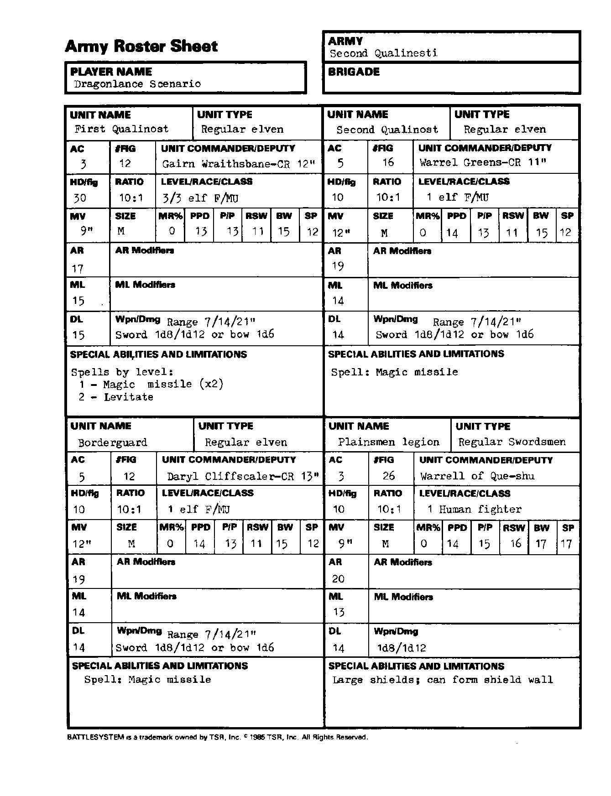

第二奎灵奈斯蒂 Second Qualinesti：军队部队
能力值顺序：力量／智力／感知／敏捷／体质／魅力。五项豁免依次为麻痹·毒素·死亡魔法／石化·变形／法杖·法棒·魔杖／吐息／法术。移动与指挥半径以桌面英寸计；“—”表示原卡空白或不适用。武器两种伤害分别针对 S/M 与 L 目标；特殊多次攻击另行注明。
第一奎灵诺斯特 First Qualinost
| 项目 | 数值 |
|---|---|
| 部队类型 | 正规：精灵 |
| 护甲等级 AC | 3 |
| 模型数 FIG | 12 |
| 指挥官／副官 | Gairn Wraithsbane，CR 12 |
| 每模型生命骰 HD/fig | 30 |
| 生物／模型比例 | 10:1 |
| 等级／种族／职业 | 精灵战士／魔法师 3/3 |
| 移动率 MV | 9 |
| 体型 | M |
| 魔法抗性 MR | 0% |
| 五项豁免 | 13/13/11/15/12 |
| 攻击等级 AR | 17 |
| AR 修正 | — |
| 士气等级 ML | 15 |
| ML 修正 | — |
| 纪律等级 DL | 15 |
| 武器／伤害 | 剑 1d8／1d12；弓 1d6，射程 7/14/21 |
| 特殊能力与限制 | 一级：魔法飞弹×2；二级：浮空。 |
第二奎灵诺斯特 Second Qualinost
| 项目 | 数值 |
|---|---|
| 部队类型 | 正规：精灵 |
| 护甲等级 AC | 5 |
| 模型数 FIG | 16 |
| 指挥官／副官 | Warrel Greens，CR 11 |
| 每模型生命骰 HD/fig | 10 |
| 生物／模型比例 | 10:1 |
| 等级／种族／职业 | 1 级精灵战士／魔法师 |
| 移动率 MV | 12 |
| 体型 | M |
| 魔法抗性 MR | 0% |
| 五项豁免 | 14/13/11/15/12 |
| 攻击等级 AR | 19 |
| AR 修正 | — |
| 士气等级 ML | 14 |
| ML 修正 | — |
| 纪律等级 DL | 14 |
| 武器／伤害 | 剑 1d8／1d12；弓 1d6，射程 7/14/21 |
| 特殊能力与限制 | 法术：魔法飞弹。 |
边境卫队 Borderguard
| 项目 | 数值 |
|---|---|
| 部队类型 | 正规：精灵 |
| 护甲等级 AC | 5 |
| 模型数 FIG | 12 |
| 指挥官／副官 | Daryl Cliffscaler，CR 13 |
| 每模型生命骰 HD/fig | 10 |
| 生物／模型比例 | 10:1 |
| 等级／种族／职业 | 1 级精灵战士／魔法师 |
| 移动率 MV | 12 |
| 体型 | M |
| 魔法抗性 MR | 0% |
| 五项豁免 | 14/13/11/15/12 |
| 攻击等级 AR | 19 |
| AR 修正 | — |
| 士气等级 ML | 14 |
| ML 修正 | — |
| 纪律等级 DL | 14 |
| 武器／伤害 | 剑 1d8／1d12；弓 1d6，射程 7/14/21 |
| 特殊能力与限制 | 法术：魔法飞弹。 |
平原人军团 Plainsmen legion
| 项目 | 数值 |
|---|---|
| 部队类型 | 正规：剑士 |
| 护甲等级 AC | 3 |
| 模型数 FIG | 26 |
| 指挥官／副官 | Warrell of Que-shu |
| 每模型生命骰 HD/fig | 10 |
| 生物／模型比例 | 10:1 |
| 等级／种族／职业 | 1 级人类战士 |
| 移动率 MV | 9 |
| 体型 | M |
| 魔法抗性 MR | 0% |
| 五项豁免 | 14/15/16/17/17 |
| 攻击等级 AR | 20 |
| AR 修正 | — |
| 士气等级 ML | 13 |
| ML 修正 | — |
| 纪律等级 DL | 14 |
| 武器／伤害 | 1d8／1d12 |
| 特殊能力与限制 | 大盾；可组成盾墙。 |
兵力卡原图
